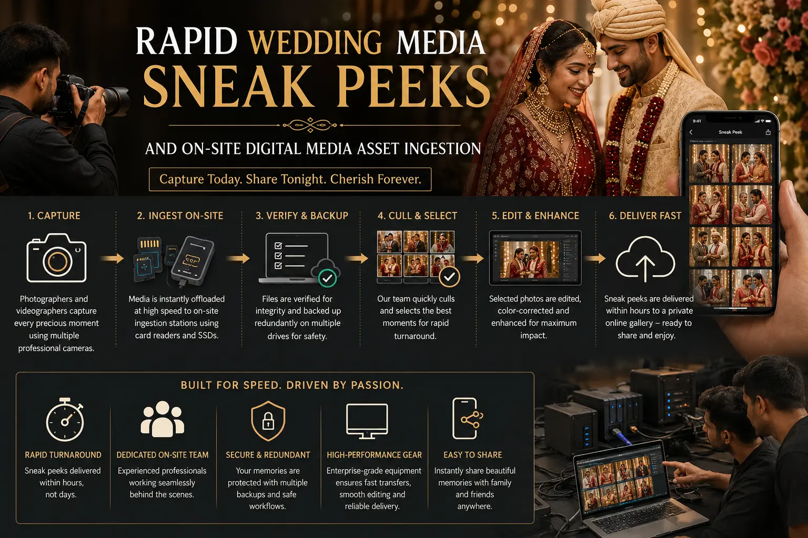
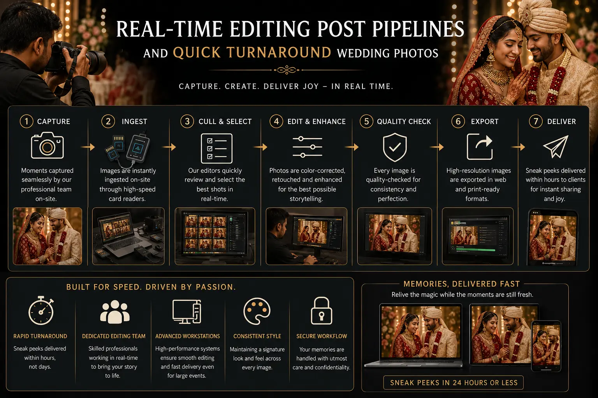

Inside the Digital Ingestion Pipeline That Delivers Rapid Wedding Photo Sneak Peeks
The Social Media Age Demands Speed Without Sacrificing Quality
For decades, the standard timeline for delivering wedding photography has been measured in months. Couples would wait anywhere from four to twelve weeks to see their official photos, receiving a gallery link long after the event's excitement had faded. While this slow post-production window allows for meticulous editing, it creates a visual gap in the immediate aftermath of the wedding. Couples want to share high-quality, professional frames with their friends and family on social media while the memories are fresh — not weeks later.
This shifting behavior has created the need for **Rapid Wedding Media Sneak Peeks**. Delivering 20 to 50 fully polished, high-resolution images within 24 hours of the ceremony is a major value-add. However, achieving this turnaround speed without compromising quality is not simply a matter of working faster. It requires a dedicated on-site workflow.
The key to speed lies in **on-site digital media asset ingestion** — a structured pipeline where a dedicated data manager backs up and categorizes files at the venue, feeding a real-time editing team. This systematic process allows a **professional camera crew near me** to deliver fast results, ensuring the couple receives stunning previews without delay.
The Mechanics of On-Site Ingestion
Setting up a **Real-Time Editing Post Pipelines** system at a wedding venue requires specialized hardware and strict data protocols:
- Dedicated Data Station. The team sets up a secure workstation equipped with high-speed laptops, fast card readers (CFexpress and SD UHS-II), and multiple SSD backups.
- Interval Card Rotation. Card runners collect memory cards from photographers and videographers at designated intervals (e.g., after the getting-ready session, ceremony, and main dinner). This keeps the data stream continuous.
- Dual-Drive Backups. The data manager transfers every card to two separate external SSDs simultaneously. One drive is dedicated to the real-time editor, while the second serves as the master backup.
- Instant Culling. The editor immediately begins culling the incoming files, selecting the best frames for the sneak peek gallery while marking the remaining files for the main post-production phase.
Same-Day Previews
Providing **Quick turnaround wedding photos** allows the couple to share beautiful, professionally edited frames with their social circle within 24 hours.
Data Safety
Our **on-site digital media asset ingestion** workflow ensures that all raw footage is backed up immediately, protecting your memories against card failures.
Coordinated Delivery
Opting for a comprehensive **photographer and videographer package** means both photo and video sneak peeks are managed under a single, fast-paced pipeline.
Optimized Budget
We keep the **combined marriage media cost** transparent, bundle data management, real-time editing, and fast delivery into a single service fee.

The Real-Time Editing Pipeline Workflow
To maintain speed and visual quality, the post-production team operates under a highly organized structure:
- Pre-built Styles and Profiles. The editor applies pre-designed color profiles based on the wedding's color theme, ensuring immediate consistency across all processed frames.
- Batch Color Adjustments. Using advanced tools like Capture One or Lightroom, the editor applies exposure and white balance adjustments in batches, speeding up the culling process.
- AI-assisted Skin Smoothing. Automated local adjustments clean up skin tones and remove minor blemishes in seconds, bypassing the need for manual, pixel-level retouching.
- Cloud Upload. The finalized sneak peek frames are uploaded to a cloud gallery link, allowing the couple to download and share them directly from their mobile devices.
On-Site Hardware
- Apple Silicon MacBooks or high-performance Windows workstations.
- Thunderbolt 4 or USB4 NVMe storage arrays.
- Dual-slot high-speed card readers.
- Color-calibrated portable monitors.
Software Settings
- Lightroom Classic Smart Previews for fast editing.
- Custom LUTs and presets matched to the venue's lighting.
- Automated file renaming and folder structuring.
- Direct integration with mobile-friendly sharing platforms.
Delivery Deliverables
- 20-50 high-resolution edited images.
- 1-2 social media video teaser loops.
- Fully mobile-responsive web gallery.
- Direct download link for family sharing.

Conclusion
Delivering **Rapid Wedding Media Sneak Peeks** requires more than just fast editors; it requires a structured, secure on-site workflow. By utilizing **on-site digital media asset ingestion** and a **Real-Time Editing Post Pipelines** process, professional teams ensure that couples receive their preview frames within 24 hours without sacrificing data safety or image quality.
At **The PhD Ads**, we bundle on-site ingestion and fast previews into our **premium marriage photography packages**. Our team handles data safety and editing live at the venue, delivering stunning previews while optimizing the **combined marriage media cost**. Contact us to see how our **professional camera crew near me** can elevate your wedding memories.
Key Topics
Instant Access to Your Memories
At The PhD Ads, we use on-site data ingestion and real-time editing pipelines to deliver beautiful sneak peek galleries within 24 hours of your ceremony.
Email: team@e2o.in